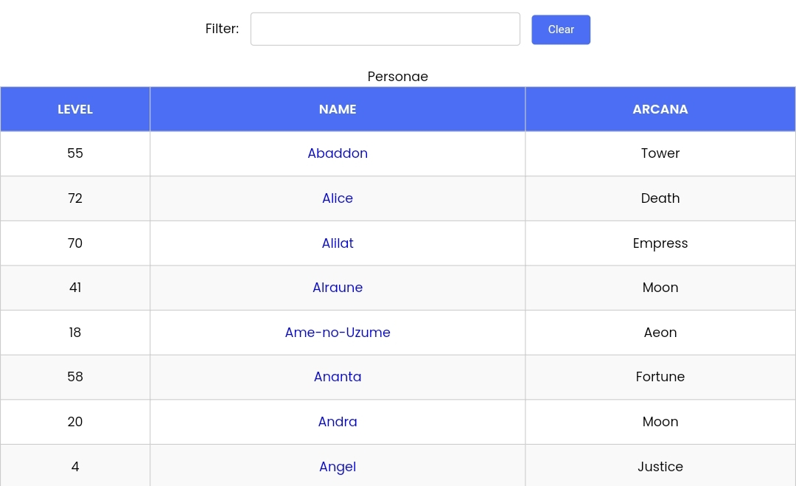

Introduction

Welcome to the Persona 4 Golden Fusion Calculator, your ultimate tool for harnessing the power of fusion in the world of Persona 4 Golden. Whether you're a seasoned player or new to the game, this calculator is designed to assist you in mastering the art of persona fusion.
In Persona 4 Golden, fusion is a key element in strengthening your party's personas and overcoming the challenges that await you. By combining different personas, you can create powerful allies with enhanced skills and abilities. The fusion process allows you to tap into the unique strengths of multiple personas, resulting in formidable allies that can aid you in your battles against the shadows.
Our Fusion Calculator has been meticulously crafted to guide you through the intricacies of persona fusion. With an extensive database of personas and their fusion recipes, you can easily search for specific personas and discover the optimal combinations required to create your desired personas.
Whether you're seeking personas with devastating offensive skills, versatile support abilities, or a well-balanced combination of attributes, our Fusion Calculator provides the knowledge and guidance you need. Unleash the power of fusion and forge your path to victory with confidence.
As you delve deeper into the world of persona fusion, consider the personas' levels, arcana, and fusion recipes. Experiment with different combinations, explore the boundless possibilities, and uncover hidden gems that will aid you in your journey.
With the Persona 4 Golden Fusion Calculator at your disposal, you have the means to create powerful personas and conquer any obstacle that comes your way. Prepare to embark on an epic adventure, where the fusion of personas holds the key to your success. Let the fusion begin!
How To Use
Discover the secrets of persona fusion with this step-by-step guide on how to effectively use the Persona 4 Golden Fusion Calculator:
Step 1: Select Persona
Start by accessing the Persona 4 Golden Fusion Calculator. Choose the persona you wish to fuse or explore fusion recipes for. You can either browse through the persona list or use the search function to find a specific persona. This allows you to focus on the persona you want to enhance or create.
For example, let's say you have the persona "Jack Frost" and want to explore its fusion possibilities. Use the search function or scroll through the list to find "Jack Frost."
Step 2: View Fusion Recipes
Once you have selected a persona, the Fusion Calculator will display a list of fusion recipes associated with that persona. These recipes represent the combinations of personas required to create the desired persona. Take your time to review the fusion recipes and explore the available fusion options.
For "Jack Frost," the Fusion Calculator might reveal fusion recipes such as fusing "Jack Frost" with "Pixie" to create the persona "Pyro Jack." Another recipe might involve fusing "Jack Frost" with a specific combination of personas to create a powerful persona with unique skills and abilities.
Step 3: Obtain Required Personas
Before you can perform a fusion, ensure that you have obtained all the necessary personas involved in the fusion recipe. If any of the required personas are missing from your collection, refer back to the Fusion Calculator to identify the specific personas you need to acquire. This step is crucial for a successful fusion.
Continuing our example, if a fusion recipe requires "Pixie," make sure you have already acquired it. If not, consult the Fusion Calculator for "Pixie's" fusion recipe and gather the required personas to fuse and create "Pixie" before proceeding with the desired fusion involving "Jack Frost."
Step 4: Perform Fusion
With the required personas in your possession, it's time to perform the fusion. Follow the fusion recipe details provided by the Fusion Calculator. These details will specify which personas need to be fused together and the resulting persona that will be created. Pay close attention to the personas' levels, arcana, and any additional instructions mentioned in the fusion recipe.
Returning to our example, let's say you have "Jack Frost" and "Pixie" in your inventory. Follow the fusion recipe provided by the Fusion Calculator, which might instruct you to fuse "Jack Frost" and "Pixie" together at a specific fusion location. By following the instructions and confirming the fusion process, you'll witness the birth of the new persona, such as "Pyro Jack."
Step 5: Evaluate Resulting Persona
After the fusion is complete, take a moment to evaluate the resulting persona. Consider its new skills, abilities, and attributes. Assess whether it aligns with your desired playstyle or complements your current party's strengths and weaknesses. This evaluation will help you determine if the fusion was successful and if the resulting persona fits into your overall strategy.
Analyze the strengths and weaknesses of "Pyro Jack." Does it possess powerful fire-based skills that can be advantageous in certain battles? Does it bring unique support abilities or stat boosts that can complement your team composition? Consider these factors to determine if the fusion was successful and how the resulting persona can contribute to your gameplay strategy.
Persona fusion is an iterative process, so feel free to repeat these steps, explore different fusion recipes, and experiment with various personas. The Persona 4 Golden Fusion Calculator is a valuable tool that will assist you in optimizing your fusion strategy and enhancing your gameplay experience.
Now that you're familiar with the steps, venture forth with confidence into the world of persona fusion. Unleash the full potential of your personas and conquer any challenges that lie in your path in Persona 4 Golden!
Interesting Details
Explore some fascinating details about the Persona 4 Golden Fusion Calculator:
1. Extensive Fusion Database: The Fusion Calculator boasts an extensive database of personas and fusion recipes, providing access to a wide range of fusion possibilities in Persona 4 Golden.
2. Skill Analysis and Recommendations: The Fusion Calculator offers skill analysis and recommendations for each persona, helping you make informed decisions when choosing which personas to fuse and what skills to prioritize.
3. Multiple Fusion Paths: Discover multiple fusion paths to achieve the same desired persona. The Fusion Calculator provides alternative fusion recipes, allowing you to explore different combinations and choose the most suitable path for your strategy.
4. Advanced Fusion Recipes: Uncover advanced fusion recipes that unlock powerful personas with unique abilities and attributes. These rare fusion combinations can be instrumental in overcoming tough challenges in Persona 4 Golden.
5. Special Fusions: Learn about special fusions that yield legendary personas with extraordinary powers. These personas often possess incredible skills and can become invaluable assets in your battles against the shadows.
6. Persona Compendium Management: The Fusion Calculator helps you manage your persona compendium by providing a comprehensive overview of the personas you have collected, including their levels, skills, and fusion histories.
7. Community-Driven Resource: The Fusion Calculator has been developed with contributions from the Persona 4 Golden community, ensuring its accuracy and relevance. It reflects the collective knowledge and insights of dedicated players.
8. Enhance Your Gameplay Experience: Persona fusion is an integral part of the Persona 4 Golden experience, and the Fusion Calculator enhances your gameplay by empowering you to create powerful and unique personas that suit your playstyle.
These interesting details highlight the significance of the Persona 4 Golden Fusion Calculator as a valuable resource for persona fusion enthusiasts. Unleash the full potential of fusion and embark on an unforgettable journey through the world of Persona 4 Golden!